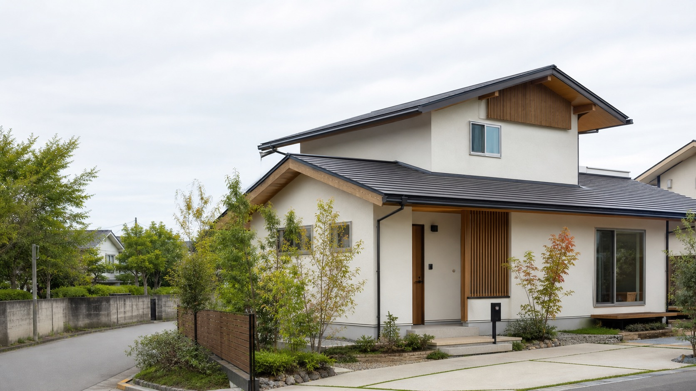
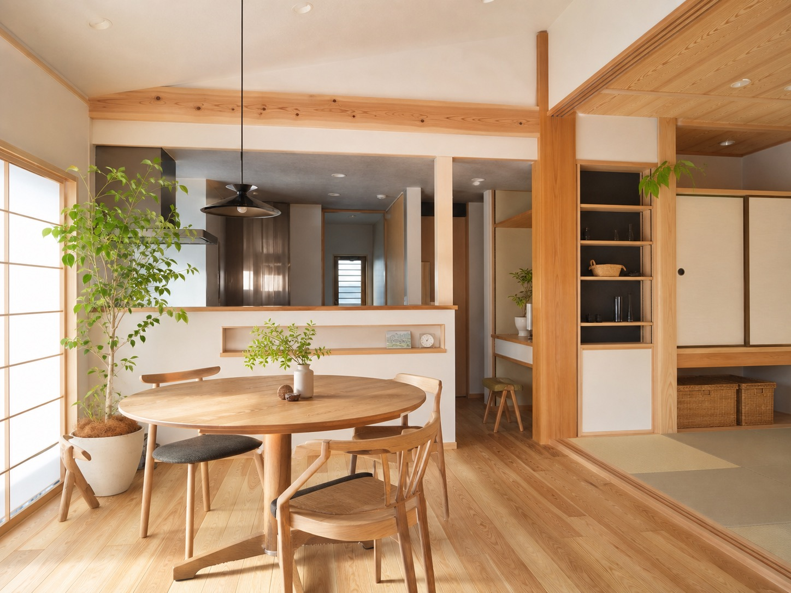
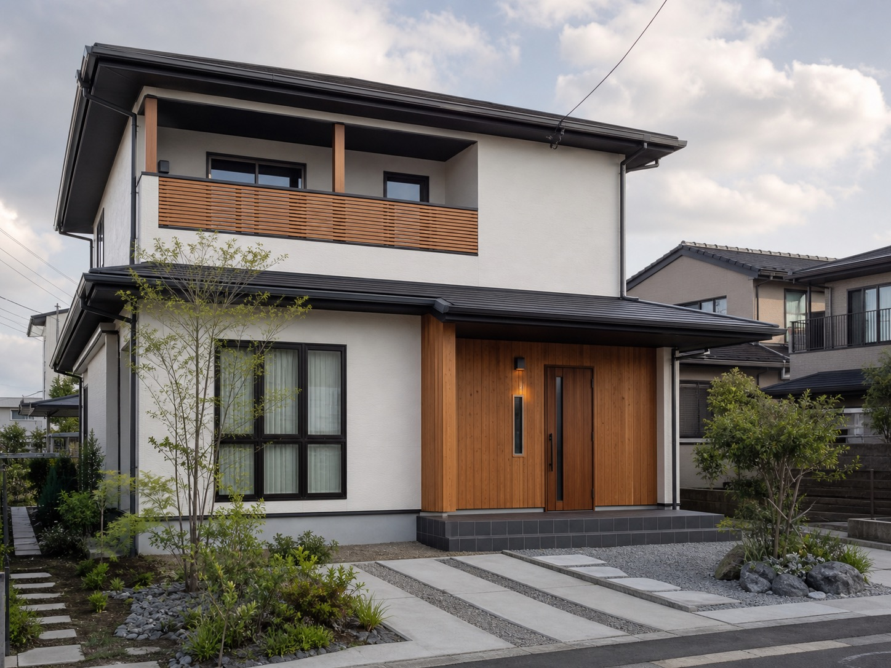
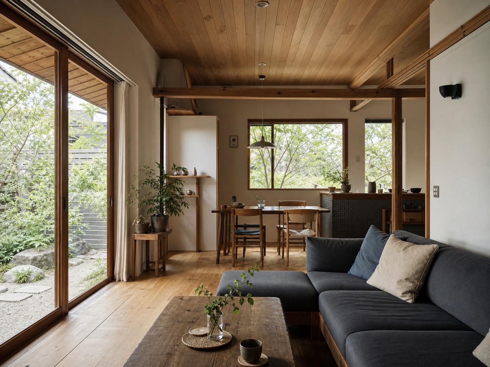
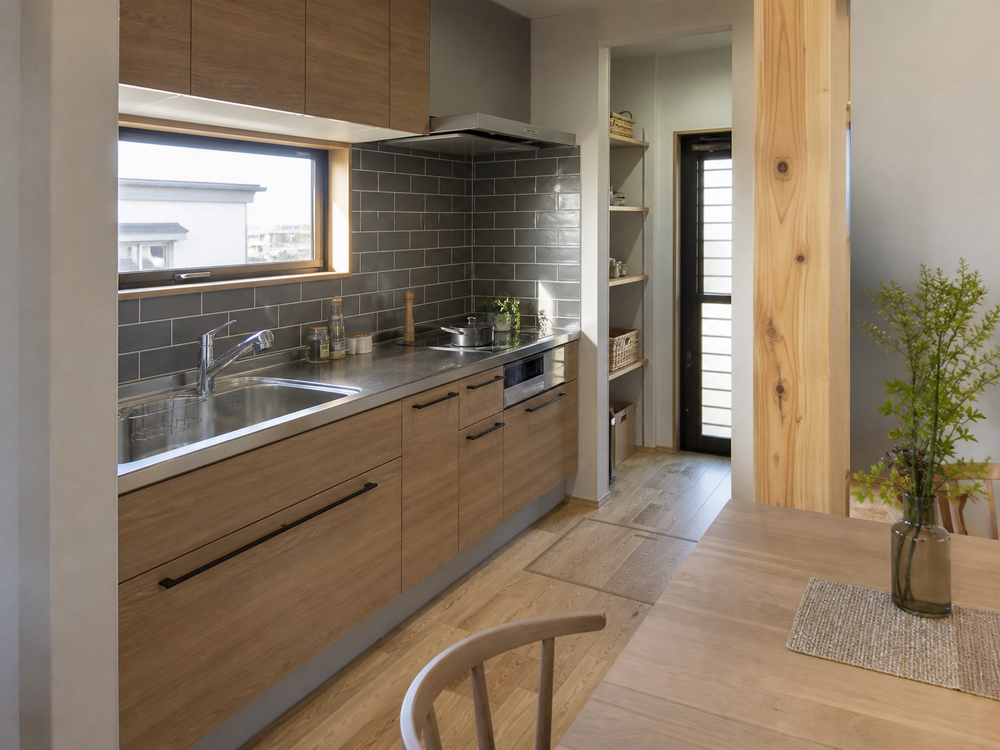

新築・大規模リフォーム
木造住宅、店舗付住宅、医院付住宅など、規格化しにくい建築の施工相談。

仮画像仙台市青葉区旭ヶ丘の工務店
住まいの水まわり、外壁、間取り変更、大規模リフォーム。事業所や店舗の原状回復まで、相談の入口をわかりやすく整えた提案用デモです。
このページは営業提案用サンプルです。公式サイトではありません。掲載内容は公開前に確認が必要です。
既存サイトでは、住宅リフォームに加えて、店舗・医院・ビル・マンション・アパート改修まで幅広い相談先であることが確認できます。今回のデモでは、その強みを一目で伝わる導線へ整理しました。

仮画像確認できた事業内容だけに絞り、住まい・店舗・共同住宅の相談を整理しています。
木造住宅、店舗付住宅、医院付住宅など、規格化しにくい建築の施工相談。
キッチン、浴室、トイレ、洗面、屋根、外壁、窓、玄関、バリアフリーなど。
飲食店、医院、店舗、テナント、寺院、原状回復工事などの相談。
外壁塗装、資産価値向上を意識した改修、入居環境を整えるリフォーム。
公式サイトでは「地元で仕事をいただき50年弱」「一流メーカー品を表示価格より安く提供できるよう企業努力」「水漏れ・詰まりにも迅速対応」などが確認できます。営業提案では、価格訴求だけでなく、相談範囲の広さと現場対応力を印象づけます。
実在しない案件名は入れず、用途ごとの写真枠として構成しています。



採用サイトでは、仙台市を中心に一般住宅、商業施設、ビル、マンションなどの建築・補修・修繕工事を行う会社である旨が確認できます。法人相談・採用情報への導線も、公式公開時には強化候補です。
公開前に最新情報の確認が必要な項目は「要確認」として掲載しています。
| 会社名 | 株式会社竹澤工務店 |
|---|---|
| 所在地 | 〒981-0904 宮城県仙台市青葉区旭ヶ丘3丁目22-22 |
| 電話番号 | 022-271-4216 / 0120-71-4216 |
| FAX | 022-271-4781 |
| メール | 要確認 |
| 営業時間 | 要確認 |
| 対応エリア | 仙台市各区、多賀城市、塩釜市、名取市、岩沼市、石巻市、松島町、利府町、大和町、富谷町、七ヶ浜町、亘理町、東松島市ほか宮城県内全域の記載あり |
| SNS・イベント | 要確認 |
| 採用情報 | 採用サイトの存在を確認。掲載内容は要確認 |